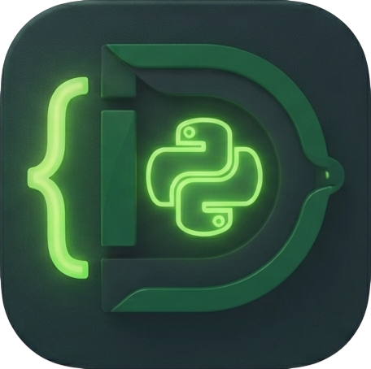

DjangoNAUT
Open a folder or create a Django project to get started.
Ctrl+OOpen Folder
Ctrl+SSave File
Ctrl+`Terminal
Ctrl+PQuick Open
Ctrl+Shift+PCommand Palette
Ctrl+Shift+EExplorer
Ctrl+Shift+ACopilot
Ctrl+GGo to Line
Add a cell and run Django code (Ctrl+Enter). Models are auto-imported.